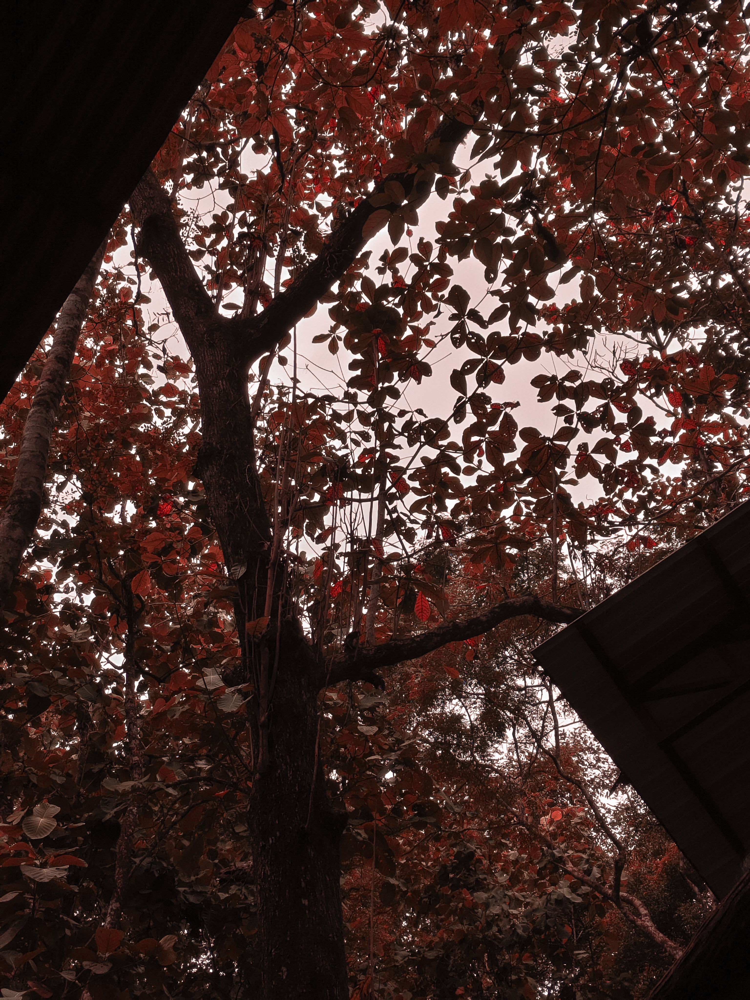

Di Balik Lensa
Selain dunia pengembangan perangkat lunak dan keamanan siber, saya memiliki ketertarikan mendalam pada seni visual, khususnya Street Photography. Bagi saya, fotografi jalanan adalah cara saya melarikan diri dari layar monitor, turun ke lapangan, dan mengobservasi kehidupan nyata yang sedang berlangsung.
Jalanan adalah teater terbuka di mana setiap detiknya menceritakan kisah yang berbeda. Saya gemar menangkap momen-momen mentah dan candid—ekspresi seseorang yang sedang tenggelam dalam pikiran, interaksi spontan antar manusia, permainan komposisi cahaya matahari di sela-sela gedung kota, hingga suasana urban yang melankolis namun terasa hidup.
Hasil Foto (Karya Terpilih)
